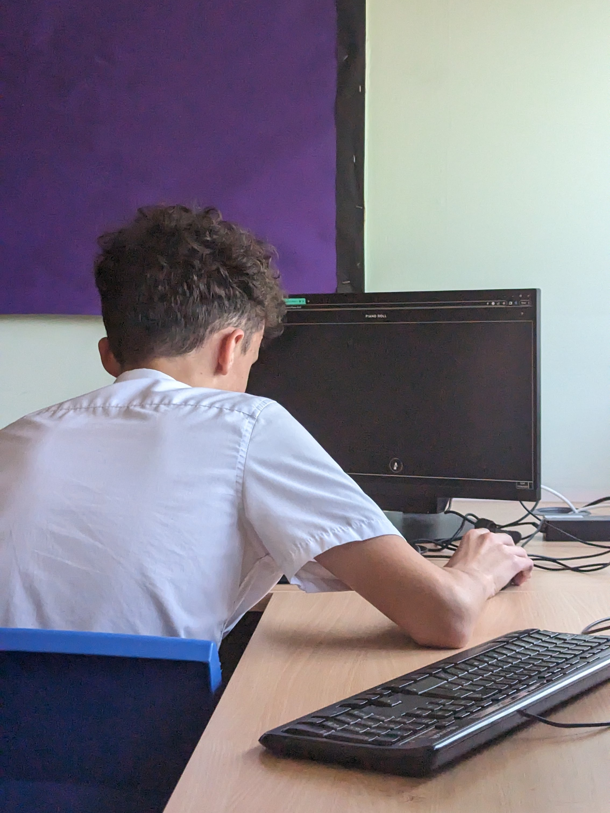
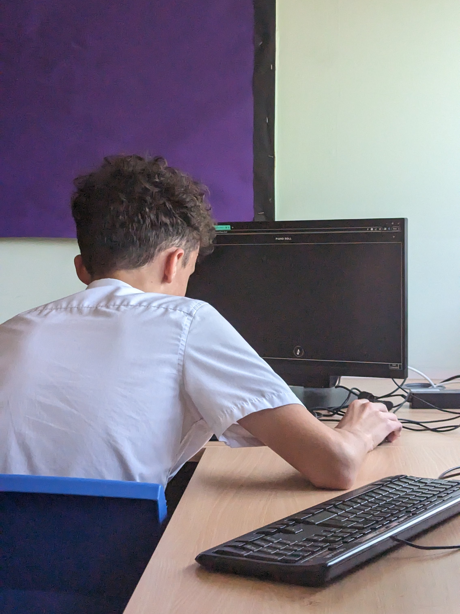
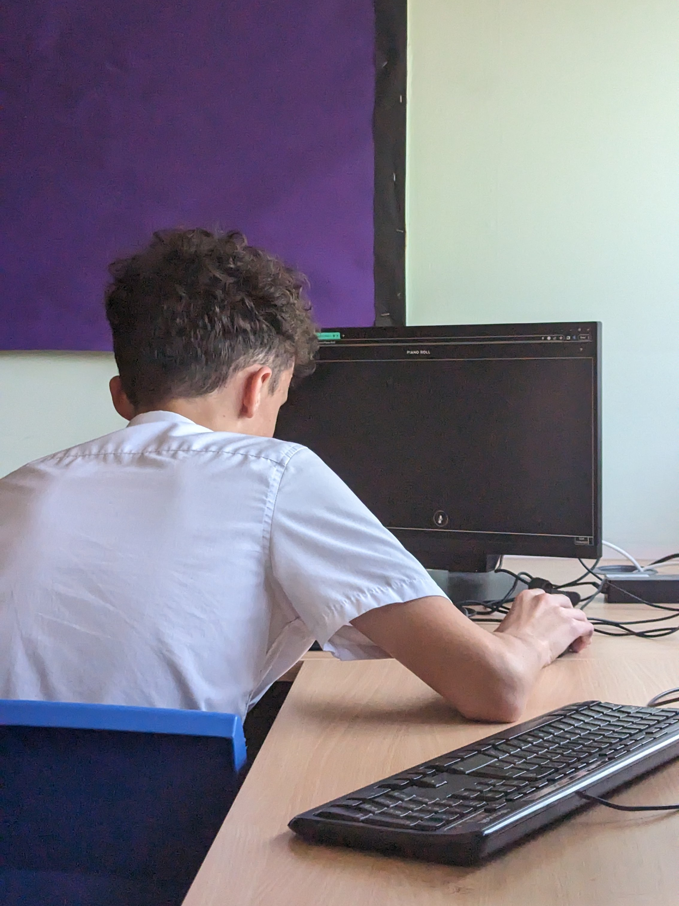
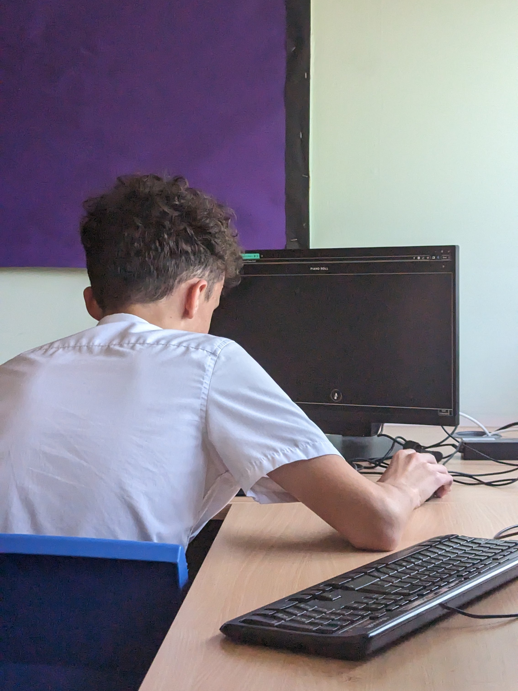

Once upon a time in the quaint town of Cheddarbrook, there lived a man named Thomas Arundale, who was known far and wide for his extraordinary love for FIFA, his undeniable reputation as the "top boyo" of the town, and his uncanny adoration for cheeseboards. Thomas was an unassuming figure with a warm smile and a heart as big as the local football stadium. He had been a passionate FIFA player since his childhood, spending countless hours honing his virtual soccer skills, and he became renowned for his prowess on the virtual pitch. The townspeople often gathered at his house to witness his epic FIFA tournaments, cheering on their beloved "FIFA King" as he showcased his talents on the screen. But Thomas wasn't just admired for his gaming abilities; he was also a true embodiment of kindness and camaraderie. As the "top boyo" of Cheddarbrook, he was the go-to person for advice, support, and a good laugh. His infectious spirit brought joy to everyone around him, and he had an uncanny ability to bring people together, fostering a sense of community that made Cheddarbrook a special place to live. And then there were cheeseboards—Thomas's absolute passion and culinary masterpiece. He had an exceptional taste for various cheeses, and he would scour the local markets and shops to find the finest selections. Thomas would meticulously arrange an array of cheeses, complementing them with an assortment of fruits, nuts, crackers, and condiments, transforming a simple platter into a work of art. The cheeseboard became his signature offering at gatherings, and everyone eagerly anticipated the delight of experiencing one of Thomas's creations. One chilly winter evening, as the snowflakes gently blanketed Cheddarbrook, a grand event was organized at the town hall to celebrate Thomas Arundale's trifecta of passions. The townspeople affectionately referred to it as "The FIFA, Friendship, and Fromage Festival." The town hall was adorned with decorations reflecting football-themed festivities, and the aroma of cheese wafted through the air, creating a mouthwatering ambiance. The festival kicked off with an exhilarating FIFA tournament, with Thomas facing off against the best gamers in town. The matches were fierce and thrilling, but Thomas displayed exceptional skill, advancing through the rounds until he reached the final. The entire town watched in awe as he lifted the virtual trophy, beaming with pride and joy. The celebrations continued with laughter, music, and dance. Thomas, as the "top boyo," shared touching stories and heartfelt speeches, emphasizing the importance of unity, friendship, and the shared love for football and cheese that bound them all. As the night progressed, the grand finale awaited—the unveiling of Thomas's most magnificent cheeseboard creation yet. With his characteristic flair and meticulous attention to detail, he revealed a masterpiece of cheese, artfully arranged like a mosaic of flavors and colors. The townspeople cheered, and the festival attendees eagerly indulged in the delightful array of cheeses and accompaniments. The FIFA, Friendship, and Fromage Festival became an annual tradition in Cheddarbrook, a celebration of Thomas Arundale's passions that brought the community closer together. Throughout the years, Thomas continued to be the beloved "FIFA King" of the town, the cherished "top boyo," and the undisputed master of cheeseboards. And so, the legend of Thomas Arundale lived on—a testament to the power of shared interests, the magic of friendship, and the joy of savoring life's simple pleasures, like a perfect game of FIFA and a delectable cheeseboard to share with those you love.